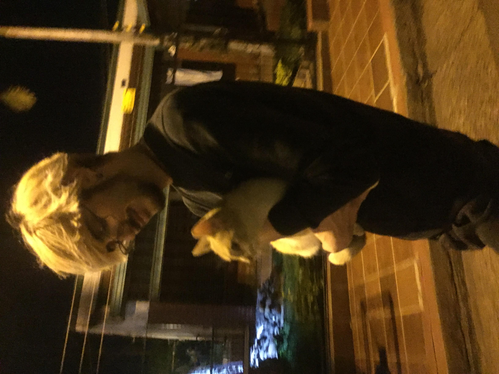

<div class="card mb-3">
    <div class="row g-0">
        <div class="col-md-4">
            
        </div>
        <div class="col-md-8">
            <div class="card-body">
                <h5 class="card-title">Un poco de mi...</h5>
                <p class="card-text">Hola! Mi nombre es Juan, soy un
                    desarrollador Web Full Stack Jr.<br>Aprendi a utilizar Java
                    como lenguaje de Back End,
                    utilizando SpringBoot como Framework
                    y Maven como herrmaienta de gestion y contstruccion de
                    proyectos. Como estudiante de la Tecnicatura en Programacion
                    y Analisis de Sistemas tengo conocimientos en otros
                    lenguajes de programacion (como C#, PHP, Arduino, Phyton,
                    Ruby, JavaScript)
                    tanto como en confeccion de modelos Ambientales, diagramas
                    de flujo, confeccion realizacion y redaccion de informes
                    relacionados
                    a entrevistas, investigaciones previas y busqueda de
                    antecedentes, declaracion de propositos y sobre todo la
                    correcta documentacion de los proyectos. Tambien cuento con
                    conocimentos en bases de datos (MySQL) y lenguajes de
                    marcado y estilo (HTML,CSS).</p>

            </div>
        </div>
    </div>
</div>